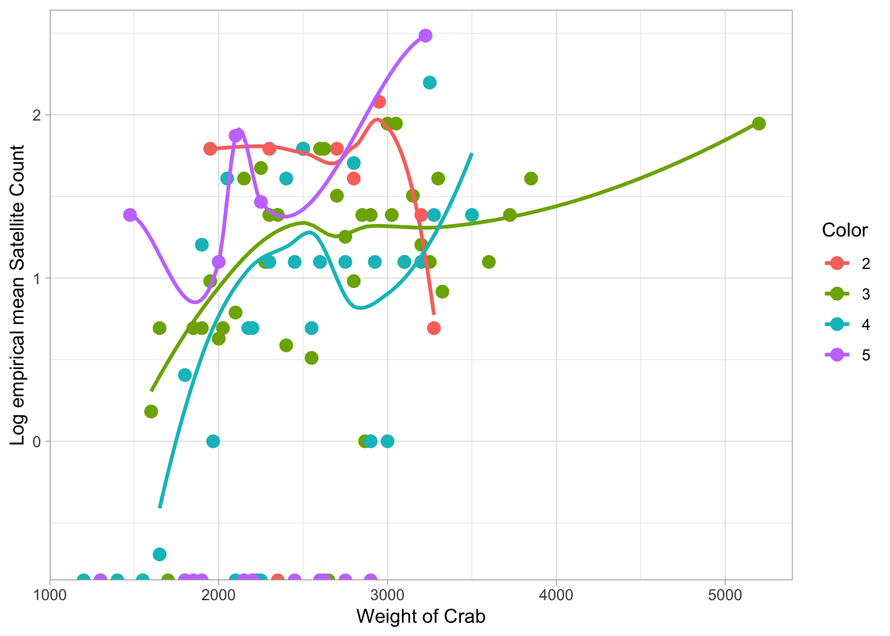

library(tidyverse)
library(leaps)
library(reactable)
# source("code_initial_version/plotPoissonDevRes.R")Packages
Read in Data
crab <- read_csv("crab.csv")
crab$Color = as.factor(crab$Color)
crab$Spine = as.factor(crab$Spine)table <- reactable(crab, searchable = TRUE, filterable = TRUE, defaultPageSize = 10, striped = TRUE, bordered = TRUE, highlight = TRUE, outlined = TRUE, onClick = "select")
tablePart 1: Exploratory Data Analysis
Variable Exploration
Explore the response variable: Satellite
ggplot(crab, mapping = aes(x = Satellite)) +
geom_histogram(fill = "gray", color = "black", binwidth = 0.5) +
xlab("Satellite") +
ylab("Count of crabs") +
geom_vline(xintercept = mean(crab$Satellite), color = "red"
, linetype = "dashed", size = 1) +
theme_classic() +
guides(color = FALSE)Explore Individual Predictors:
Explore Color
table(crab$Color) %>% prop.table() %>% signif(3) %>% pander::pander()| 2 | 3 | 4 | 5 |
|---|---|---|---|
| 0.0694 | 0.549 | 0.254 | 0.127 |
sumStatsCol <- crab %>%
group_by(Color) %>%
summarise(n = n(),
mntotal = mean(Satellite),
vartotal = var(Satellite),
logmntotal = log(mntotal)
)
sumStatsCol# A tibble: 4 × 5
Color n mntotal vartotal logmntotal
<fct> <int> <dbl> <dbl> <dbl>
1 2 12 4.08 9.72 1.41
2 3 95 3.29 10.3 1.19
3 4 44 2.23 6.74 0.801
4 5 22 2.05 13.1 0.716ggplot(sumStatsCol, aes(x = Color, y = logmntotal)) +
geom_point(size = 3) +
geom_smooth(method = "loess") +
xlab("Crab Color") +
ylab("Log of the empirical mean number of Satellites") +
labs(title = "Color Vs. Log of empirical mean of Satellites") +
theme_light()# check mean = variance
ggplot(sumStatsCol, aes(x = mntotal, y = vartotal)) +
geom_point( size = 3) +
geom_smooth(method = "loess") +
geom_abline(slope = 1, intercept = 0,
col = "red", size = 1, linetype = 3) +
ylim(-2.5, 15) +
xlab("Empirical mean number of Satellites per crab (by Color)") +
ylab("Empirical variance in number of Satellites per crab (by Color)") +
labs(title = "Mean = Variance") +
theme_light()Explore Spine
table(crab$Spine) %>% prop.table() |> signif(3) %>% pander::pander()| 1 | 2 | 3 |
|---|---|---|
| 0.214 | 0.0867 | 0.699 |
sumStatsSp <- crab %>%
group_by(Spine) %>%
summarise(n = n(),
mntotal = mean(Satellite),
vartotal = var(Satellite),
logmntotal = log(mntotal)
)
sumStatsSp# A tibble: 3 × 5
Spine n mntotal vartotal logmntotal
<fct> <int> <dbl> <dbl> <dbl>
1 1 37 3.65 11.5 1.29
2 2 15 2 5.57 0.693
3 3 121 2.81 9.82 1.03 ggplot(sumStatsSp, aes(x = Spine, y = logmntotal)) +
geom_point(size = 3) +
geom_smooth(method = "loess") +
xlab("Crab Spine") +
ylab("Log of the empirical mean number of Satellites") +
labs(title = "Spine Vs. Log of empirical mean of Satellites") +
theme_light()# check mean = variance
ggplot(sumStatsSp, aes(x = mntotal, y = vartotal)) +
geom_point( size = 3) +
geom_smooth(method = "loess") +
geom_abline(slope = 1, intercept = 0,
col = "red", size = 1, linetype = 3) +
ylim(-1, 12.5) +
xlab("Empirical mean number of Satellites per crab (by Spine)") +
ylab("Empirical variance in number of Satellites per crab (by Spine)") +
labs(title = "Mean = Variance") +
theme_light()Explore Width
sumStatsWidth <- crab %>%
group_by(Width) %>%
summarise(n = n(),
mntotal = mean(Satellite),
vartotal = var(Satellite),
logmntotal = log(mntotal)
)
# sumStatsWidth
ggplot(sumStatsWidth, aes(x = Width, y = logmntotal)) +
geom_point() +
geom_smooth(method = "loess") +
xlab("Crab Width") +
ylab("Log of the empirical mean number of Satellites") +
labs(title = "Width Vs. Log of empirical mean of Satellites") +
theme_light()# check mean = variance
ggplot(sumStatsWidth, aes(x = mntotal, y = vartotal)) +
geom_point() +
geom_smooth(method = "loess") +
geom_abline(slope = 1, intercept = 0,
col = "red", size = 1, linetype = 3) +
xlab("Empirical mean number of Satellites per crab (by Width)") +
ylab("Empirical variance in number of Satellites per crab (by Width)") +
labs(title = "Mean = Variance") +
theme_light()Explore Weight
sumStatsWght <- crab %>%
group_by(Weight) %>%
summarise(n = n(),
mntotal = mean(Satellite),
vartotal = var(Satellite),
logmntotal = log(mntotal)
)
# sumStatsWght
ggplot(sumStatsWght, aes(x = Weight, y = logmntotal)) +
geom_point() +
geom_smooth(method = "loess") +
xlab("Crab Weight") +
ylab("Log of empirical mean of Satellites") +
labs(title = "Weight Vs. Log of empirical mean of Satellites") +
theme_light()# check mean = variance
ggplot(sumStatsWght, aes(x = mntotal, y = vartotal)) +
geom_point() +
geom_smooth(method = "loess") +
geom_abline(slope = 1, intercept = 0,
col = "red", size = 1, linetype = 3) +
xlab("Empirical mean number of Satellites per crab (by Weight)") +
ylab("Empirical variance in number of Satellites per crab (by Weight)") +
xlim(0, 7.25)+
labs(title = "Mean = Variance") +
theme_light()Explore predictor Combinations:
Explore by Width and Color
sumStatsWidCol <- crab %>%
group_by(Color, Width) %>%
summarise(n = n(),
mntotal = mean(Satellite),
vartotal = var(Satellite),
logmntotal = log(mntotal,)
)
# sumStatsWidCol
ggplot(sumStatsWidCol, aes(x = Width, y = logmntotal, color = Color)) +
geom_point(size = 2)+
geom_smooth(method = "loess", se=FALSE) +
labs(title = "Width & Color Predicts Log of empirical mean of Satellites") +
xlab("Widths of Crab") +
ylab("Log empirical mean Satellite Count") +
theme_light()# mean = variance
ggplot(sumStatsWidCol, aes(x = mntotal, y = vartotal)) +
geom_point(size = 2)+
geom_smooth(method = "loess") +
geom_abline(slope = 1, intercept = 0,
col = "red", size = 2, linetype = 3) +
xlim(0, 8)+
labs(title = "Mean = Variance") +
xlab("Mean total") +
ylab("Variance Total") +
theme_light()Explore by Weight and Color
sumStatsWghtCol <- crab %>%
group_by(Color, Weight) %>%
summarise(n = n(),
mntotal = mean(Satellite),
vartotal = var(Satellite),
logmntotal = log(mntotal)
)
# sumStatsWghtCol
ggplot(sumStatsWghtCol, aes(x = Weight, y = logmntotal, color = Color)) +
geom_point(size = 3)+
geom_smooth(method = "loess", se=FALSE)+
xlab("Weight of Crab") +
ylab("Log empirical mean Satellite Count") +
theme_light()
ggplot(sumStatsWghtCol, aes(x = mntotal, y = vartotal)) +
geom_point(size = 2)+
geom_smooth(method = "loess") +
geom_abline(slope = 1, intercept = 0,
col = "red", size = 2, linetype = 3) +
xlim(0, 8) +
labs(title = "Mean = Variance") +
xlab("Mean total") +
ylab("Variance Total") +
theme_light()
Questions
1. Any evidence you consider to evaluate Poisson regression’s mean = variance assumption (with your thoughts on the validity of the assumption)?
2. Plots (with commentary) that explore the utility of the available explanatory variables for predicting number of satellites
Part 2 :Poisson Regression Models
crab <- crab %>% mutate(
color4 = ifelse(Color == 4, 1, 0)
) # mutated this since among the colors, dark medium (4) is most
# and only significant predictormod = glm(formula = Satellite ~ Weight + Width + I(Width^2) + color4,
family = "poisson", data = crab
)1. Include a summary of the model output
summary(mod)
Call:
glm(formula = Satellite ~ Weight + Width + I(Width^2) + color4,
family = "poisson", data = crab)
Deviance Residuals:
Min 1Q Median 3Q Max
-3.2243 -1.8311 -0.5256 0.7874 4.7646
Coefficients:
Estimate Std. Error z value Pr(>|z|)
(Intercept) -2.159e+01 5.433e+00 -3.974 7.07e-05 ***
Weight 6.948e-04 1.800e-04 3.860 0.000114 ***
Width 1.561e+00 3.991e-01 3.911 9.19e-05 ***
I(Width^2) -2.892e-02 7.464e-03 -3.875 0.000107 ***
color4 -2.335e-01 1.135e-01 -2.058 0.039628 *
---
Signif. codes: 0 '***' 0.001 '**' 0.01 '*' 0.05 '.' 0.1 ' ' 1
(Dispersion parameter for poisson family taken to be 1)
Null deviance: 632.79 on 172 degrees of freedom
Residual deviance: 538.64 on 168 degrees of freedom
AIC: 903.94
Number of Fisher Scoring iterations: 62. Conduct a hypothesis test to determine if there is evidence that this model is useful
modRed = glm(formula = Satellite ~ Weight + Width,
family = "poisson", data = crab
)
summary(modRed)
Call:
glm(formula = Satellite ~ Weight + Width, family = "poisson",
data = crab)
Deviance Residuals:
Min 1Q Median 3Q Max
-2.9309 -1.9702 -0.5478 0.9700 4.9904
Coefficients:
Estimate Std. Error z value Pr(>|z|)
(Intercept) -1.2952111 0.8988960 -1.441 0.14962
Weight 0.0004470 0.0001586 2.818 0.00483 **
Width 0.0460765 0.0467497 0.986 0.32433
---
Signif. codes: 0 '***' 0.001 '**' 0.01 '*' 0.05 '.' 0.1 ' ' 1
(Dispersion parameter for poisson family taken to be 1)
Null deviance: 632.79 on 172 degrees of freedom
Residual deviance: 559.90 on 170 degrees of freedom
AIC: 921.2
Number of Fisher Scoring iterations: 6$H_O: B_3=0 , B_4=0 $ \(H_A: B_3\not=0 , B_4\not= 0\)
DevRed = 559.90
DevFull = 538.64
df = 170 - 168
pchisq(DevRed-DevFull, df, lower.tail = FALSE) %>% signif(digits = 4)[1] 2.418e-05We can conclude that based off the likelihood ratio test, there is evidence that the full model is the better choice (\(ts=21.26\),\(df = 2\),\(P\approx0\))
3.Include an interpretation of the estimated coefficient on carapace width. Include a discussion about the significance of carapace width in the model
We can interpret the estimated coefficient on carapace width as…. For every unit added to the width, the difference in the logs of expected satellite count changes by 1.369351, given the other predictor variables in the model are held constant.
4. Conduct a hypothesis test to determine if there is evidence that the model has significant lack of fit
\(H_O:B_1=0,B_2=0,B_3=0,B_4=0\) \(H_A:\) At least one \(B_i\not=0\)
pchisq(554.17, df = 169, lower.tail = FALSE) %>% signif(digits = 4)[1] 1.655e-42There is no evidence that the model has significant lack of fit, with \(P\approx0\)
Part 3: Poisson Regression Model with Overdispersion
Fit a Poisson Regression model that adjusts for overdispersion. Provide a summary of your model output
modQ = glm(formula = Satellite ~ Weight + Width + I(Width^2) + color4,
family = "quasipoisson", data = crab, offset = log(Width)
)summary(modQ)
Call:
glm(formula = Satellite ~ Weight + Width + I(Width^2) + color4,
family = "quasipoisson", data = crab, offset = log(Width))
Deviance Residuals:
Min 1Q Median 3Q Max
-3.2239 -1.8309 -0.5255 0.7870 4.7646
Coefficients:
Estimate Std. Error t value Pr(>|t|)
(Intercept) -2.340e+01 9.603e+00 -2.436 0.0159 *
Weight 6.947e-04 3.182e-04 2.183 0.0304 *
Width 1.488e+00 7.055e-01 2.109 0.0364 *
I(Width^2) -2.826e-02 1.319e-02 -2.142 0.0336 *
color4 -2.335e-01 2.006e-01 -1.164 0.2461
---
Signif. codes: 0 '***' 0.001 '**' 0.01 '*' 0.05 '.' 0.1 ' ' 1
(Dispersion parameter for quasipoisson family taken to be 3.124796)
Null deviance: 606.45 on 172 degrees of freedom
Residual deviance: 538.63 on 168 degrees of freedom
AIC: NA
Number of Fisher Scoring iterations: 6plot(modQ)1. if you believe there is a significant problem with overdispersion
Dispersion parameter (No overdispersion, if 1 or less)
Yes there is a problem with the dispersion parameter, since it is greater than 1, therefore implying that the model has been overdispersed.
\(\hat{\phi}=3.124796\) considered a scalar
2. the impact that adjusting for overdispersion has on the performance of your model.
# LOF-test
pchisq(
summary(modQ)$deviance,
summary(modQ)$df.residual,
lower.tail = FALSE
) %>% signif(digits = 4)[1] 2.053e-40modred = glm(formula = Satellite ~ Weight + Width + color4,
family = "quasipoisson", data = crab, offset = log(Width)
)
summary (modred)
Call:
glm(formula = Satellite ~ Weight + Width + color4, family = "quasipoisson",
data = crab, offset = log(Width))
Deviance Residuals:
Min 1Q Median 3Q Max
-2.9902 -1.9670 -0.5098 0.9451 4.8609
Coefficients:
Estimate Std. Error t value Pr(>|t|)
(Intercept) -3.3276750 1.6023276 -2.077 0.0393 *
Weight 0.0004571 0.0002811 1.626 0.1058
Width 0.0001963 0.0829475 0.002 0.9981
color4 -0.2238217 0.2016238 -1.110 0.2685
---
Signif. codes: 0 '***' 0.001 '**' 0.01 '*' 0.05 '.' 0.1 ' ' 1
(Dispersion parameter for quasipoisson family taken to be 3.129959)
Null deviance: 606.45 on 172 degrees of freedom
Residual deviance: 555.05 on 169 degrees of freedom
AIC: NA
Number of Fisher Scoring iterations: 6\(H_O: B_3 = 0, B_4 = 0\) $H_A: B_3 = 0, B_4 = 0 $
#LRT
anova(modred, modQ, test = "LRT")Analysis of Deviance Table
Model 1: Satellite ~ Weight + Width + color4
Model 2: Satellite ~ Weight + Width + I(Width^2) + color4
Resid. Df Resid. Dev Df Deviance Pr(>Chi)
1 169 555.05
2 168 538.63 1 16.417 0.0219 *
---
Signif. codes: 0 '***' 0.001 '**' 0.01 '*' 0.05 '.' 0.1 ' ' 1# LRT
DevRed = 555.05
DevFull = 538.63
df = 169 - 168
pchisq(DevRed-DevFull, df, lower.tail = FALSE) %>% signif(digits = 4)[1] 5.075e-05Can conclude that the full model is the better choice, according to the likelihood ratio test results…. $ts = 16.417, df = 2, P=0.0219 $